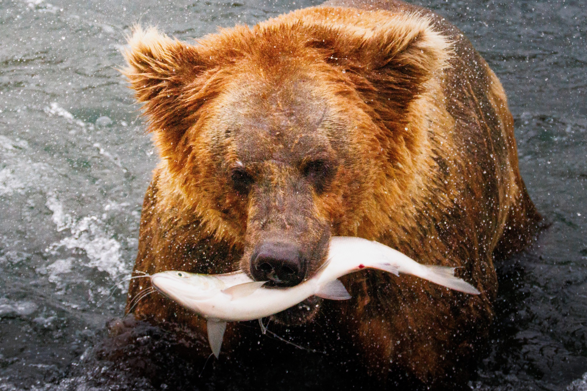
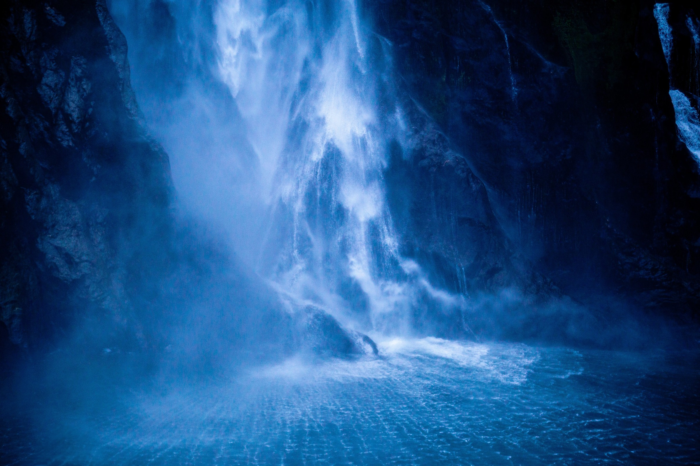
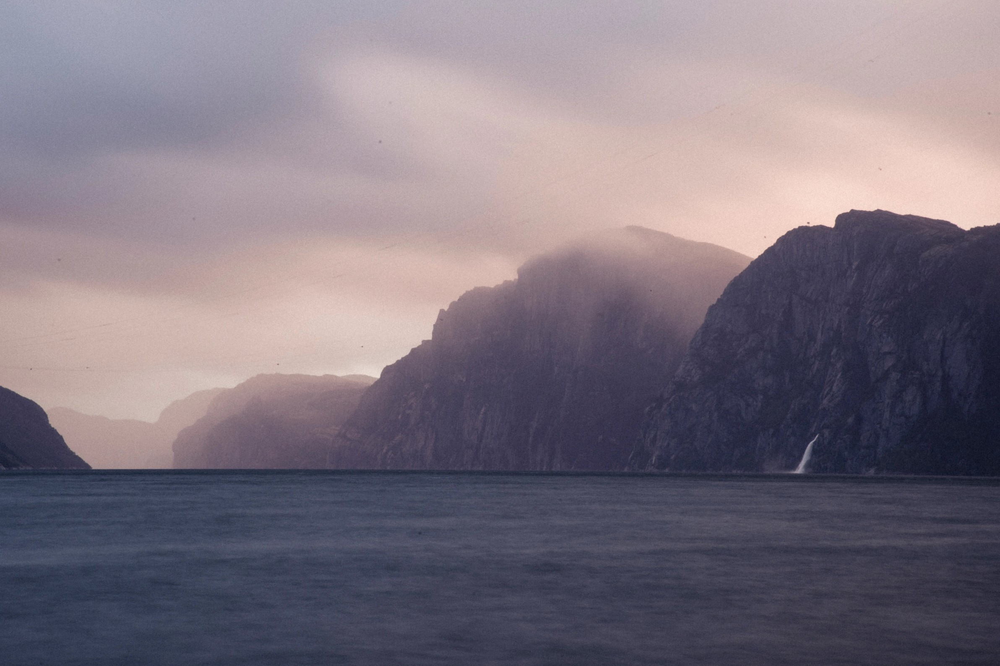
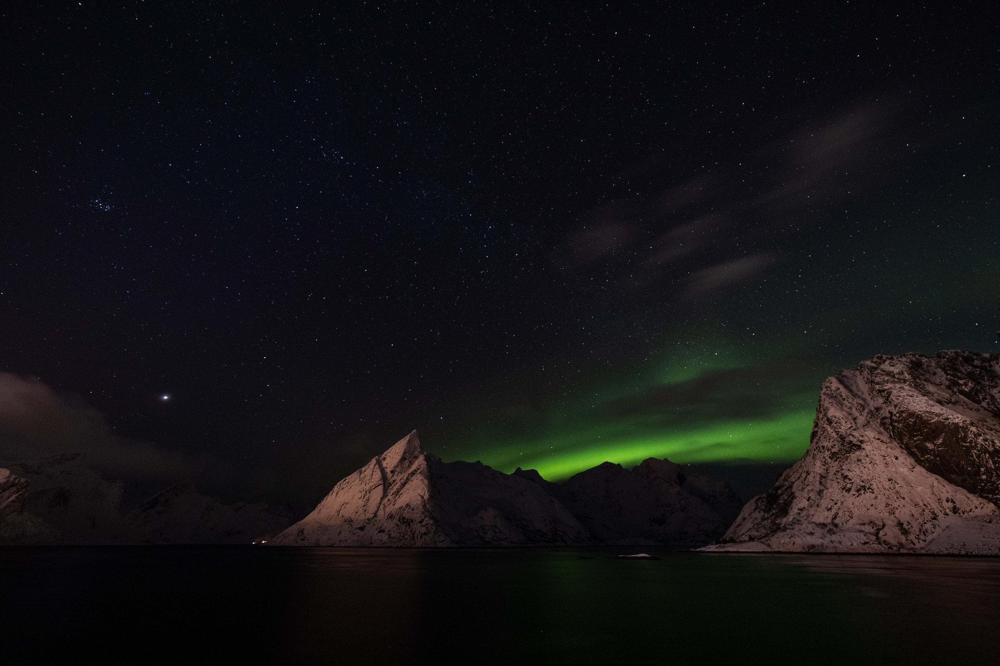
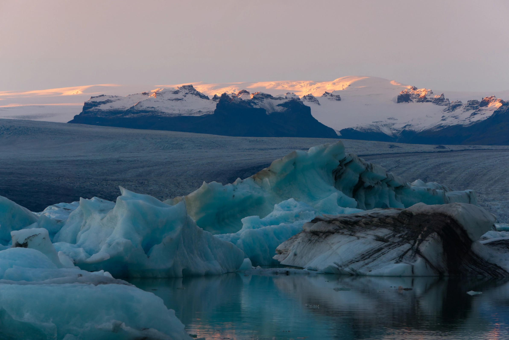
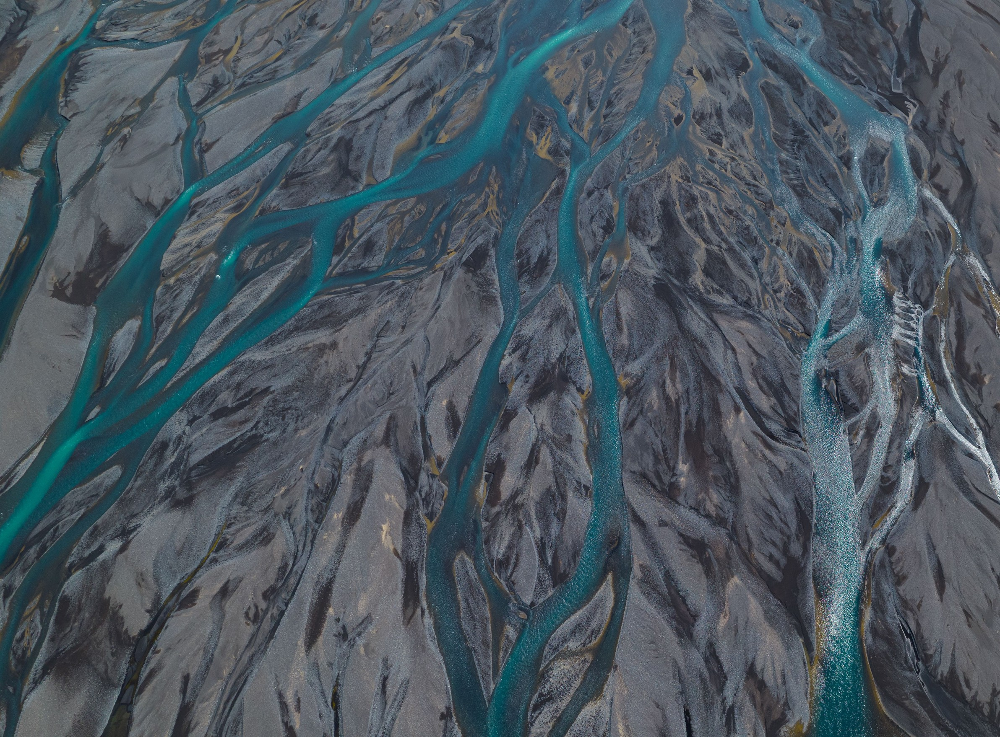
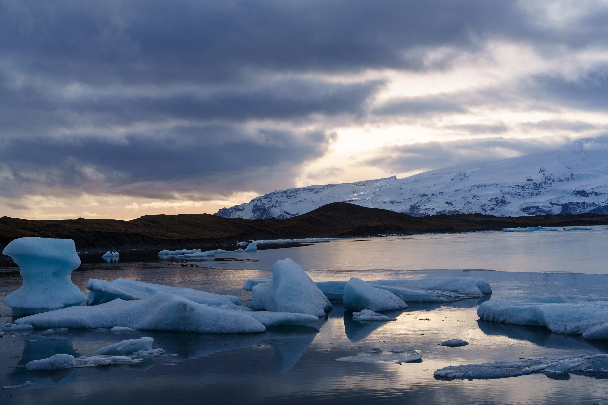

Candidates
Seven more, found for the same theming, each distinctly different from the five above. None is in the rotation; they are here for review.








Every image from the alternatives, shown in full. All five now rotate in Alt 18, Silver.
Seven more, found for the same theming, each distinctly different from the five above. None is in the rotation; they are here for review.






